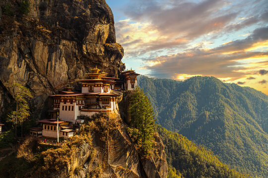
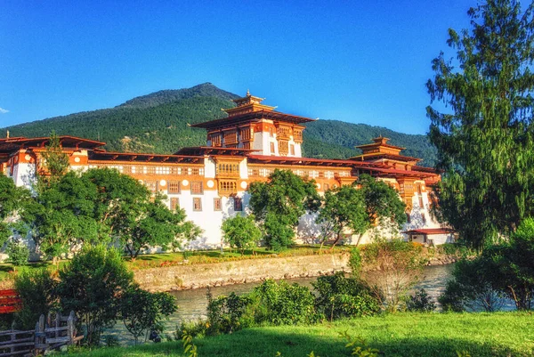

Pontos Turísticos do Butão
Mosteiro Taktsang – Tiger’s Nest
O Tiger’s Nest é um dos destinos mais emblemáticos do Butão. Esse mosteiro budista foi construído no século XVII em uma falésia a mais de 3 mil metros de altitude. A trilha até o topo leva de 2 a 3 horas e proporciona uma vista deslumbrante do vale de Paro.
Punakha Dzong
Localizado na confluência dos rios Pho Chhu e Mo Chhu, o Punakha Dzong é uma fortaleza e monastério impressionante, símbolo da arquitetura tradicional butanesa. É palco de importantes cerimônias religiosas e festivais culturais, como o Punakha Tshechu.
